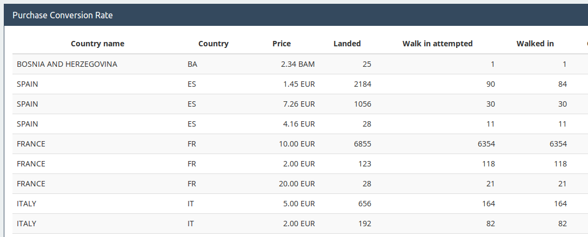

Property-based testing
Extending examples to a specification
Testing in a nutshell
- Given some object in a certain state
- When I call some methods
- Then something happens
Example-based testing in a nutshell
- Given some programmer-chosen input
- When I call some methods
- Then the result is equal to an expected output I defined
Input and output versus state
<next_state, output> = f(<current_state, input>)Example-based test
interface Price {
public boolean contains(Money money);
public Money min();
public Money max();
// ...
}
class SingleAmount implements Price { /* ... */ }
class ContinuousRangeOfAmounts implements Price { /* ... */ }
class SetOfAmounts implements Price { /* ... */ }
Example-based test
// given
Price single = new SingleAmount(new Money("2.00/EUR"));
Price range = new ContinuousRangeOfAmounts(
new Money("1.50/EUR"),
new Money("2.10/EUR")
);
SetOfAmounts set = new SetOfAmounts();
// when
set.add(single);
set.add(range);
// then
assertTrue(set.contains("1.50/EUR"));
assertTrue(set.contains("2.00/EUR"));
assertFalse(set.contains("2.11/EUR"));
The perils of examples
- TDD is a design tool, not much a testing tool. Coverage of inputs?
- When do you stop adding tests?
- How do you maintain all these tests?
- How do I overcome my bias to choose known corner cases?
Property-based testing in a nutshell
- Given a random uniform input
- When I drive the code with this input
- Then some property of the output is always true
Property-based test
// given
List<Price> prices = randomSequence(
SingleAmount.class,
ContinuousRangeOfAmounts.class
);
//when
SetOfAmounts set = new SetOfAmounts();
for (Price p: prices) {
set.add(p);
}
// then
for (Price p: prices) {
assertTrue(
set.contains(p),
"Price " + p " is not contained in the final set"
);
}
What do we get in return?
- Higher, uniform coverage of inputs and paths
- Writing and maintaining tests is less time consuming
- Even more insights on the specification that examples
Postconditions

Invariants

Inverse functions

Oracle

Examples
Testing grouping APIs
Testing grouping APIs
$this
->forAll(
Generator\set(Generator\elements(['country', 'price', ...]))
)
->then(function($fields) {
$response = $this->groupBy($fields);
$landed = 0;
foreach ($response['elements'] as $row) {
$landed += $row['landed'];
}
$this->assertEquals(
$totalExpectedLanded,
$landed
);
});
Testing a DateTime library
$this
->forAll(
Generator\choose(2000, 2020),
Generator\choose(0, 364),
Generator\choose(0, 364)
)
->then(function($year, $dayOfYear, $anotherDayOfYear) {
$day = UTCDateTime::fromZeroBasedDayOfYear(
$year, $dayOfYear);
$anotherDay = UTCDateTime::fromZeroBasedDayOfYear(
$year, $anotherDayOfYear);
$this->assertEquals(
abs($dayOfYear - $anotherDayOfYear) * 86400,
abs($day->differenceInSeconds($anotherDay)),
"Days of the year $year, ..."
);
});
Shrinking

Testing images
Testing images
$this
->forAll(
Generator\image(
Generator\choose(0, 1024),
Generator\choose(0, 768)
),
)
->then(function($inputImage) {
$this->assertImagesAreEqual(
$image->resize(0.5)->resize(0.5),
$image->resize(0.25)
);
});
A survey of Quickchecks by MacIver
| C | theft |
| C++ | CppQuickCheck |
| Clojure | test.check |
| Coq | QuickChick |
| F# | FsCheck |
| Haskell | Quickcheck |
| JavaScript | jsverify |
| PHP | Eris |
| Python | Hypothesis |
| Ruby | Rantly |
| Rust | Quickcheck |
| Scala | ScalaCheck |
| Swift | Swiftcheck |
References
- A summary blog post
- Choosing properties for property-based testing
- A survey of Quickchecks
Acknowledgements
Images on how to find properties by scottw